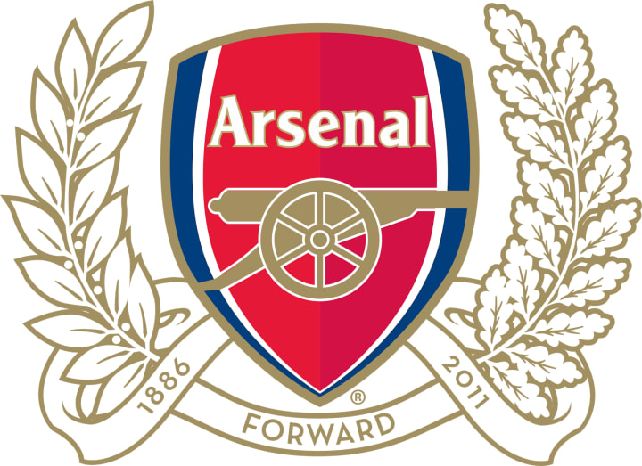
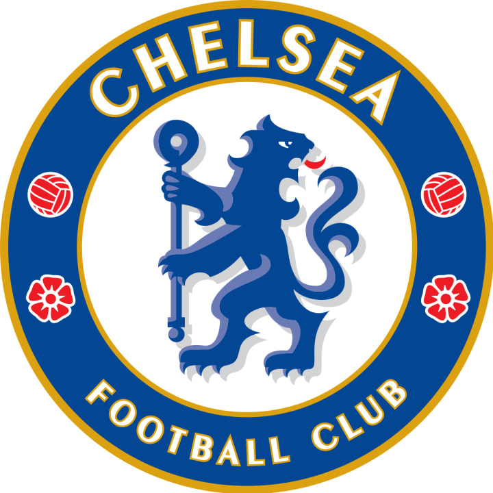
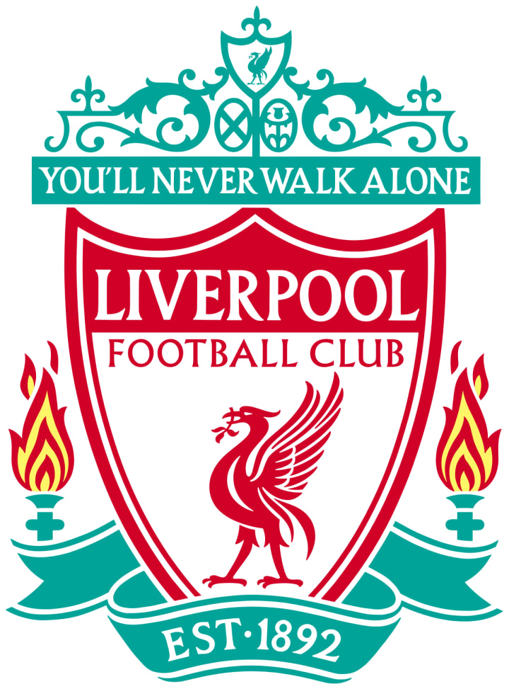
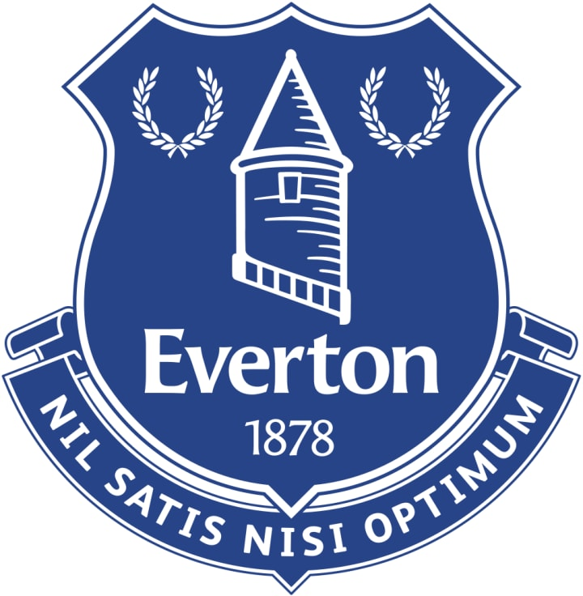

Manchester United was founded in 1878. Top soccer players include Cristiano Ronaldo and Wayne Rooney, both forwards....
Manchester United has been cited as the top of the most successful clubs in Premier League history, and it's easy to see why. They have scored over 2021 points since 1992. Everyone loves Manchester United, primarily because they're incredible.
Soccer analysts can tell you that their stats are off the charts — and that's all the more reason to think of them as a walking, talking hall of fame team.
Arsenal
Title description, Sep 2, 2017

Arsenal
Arsenal Soccer Club is the next on the list of the most successful clubs in Premier League history. Since 1992,...
the group has scored a total of 1822 points.
Chances are you know an Arsenal fan. It's the fifth most popular club, in terms of fanbase. Arsenal is a highly valuable soccer club in England, with an estimated value of $2 billion as of 2016.
Chelsea
Title description, Sep 2, 2017

Chelsea
Third up on any list of the most successful clubs in Premier League history, is Chelsea. Now celebrating its 113th year in action,...
Chelsea FC has been raking up goal after goal on the scoreboards.Chelsea has a lot of numbers that are seriously impressive.
They've scored 1789 goals since 1992, and the average home gate for last year's season was 41,507.
(That's the sixth highest home gate attendance rate for any club in the Premier League!)
Liverpool

Liverpool
Hailing from the birthplace of the Beatles, Liverpool FC was first established over 125 years ago....
Since its humble beginnings, Liverpool has found win after win, and quickly climbed the ranks as one of the most successful clubs in Premier League history.
Their cutthroat rivalry with Manchester United has become the stuff of legend. Perhaps that's why they've scored over 1600 points since 1992.
Tottenham Hotspur
Tottenham Hotspur
Tottenham Hotspur, often just called Tottenham or "Spurs" by their loyal fans, is one of the most successful clubs in Premier League history — especially when it comes to breaking ground....
This was the first soccer team to win the League and FA Cup Double, and the first non-league winners of the FA Cup.
When you combine their history-making past with the fact that they've scored over 1440 points since 1992, it is clear what makes them a force to be reckoned with.
Everton

Everton
As one of the most successful clubs in Premier League history, Everton has competed in the top division for a record 114 seasons....
They are perhaps most famous for their cross-town rivalry with Liverpool, commonly known as the "Merseyside Derby."
That alone tells you volumes about their success. To make things even more impressive, their 1324 goals since 1992 attests to their skill, too.
Needless to say, this club has been around for over 135 years — and it's safe to say they will continue to be around.
Aston Villa
Aston Villa
With a very impressive 1223 goals scored since 1992, Aston Villa has rightfully earned its place among the most successful clubs that have previously been in Premier League history.....
The Blues, or the Villas as you might know them, have been around for over 140 years — making them one of the oldest soccer clubs in the US.